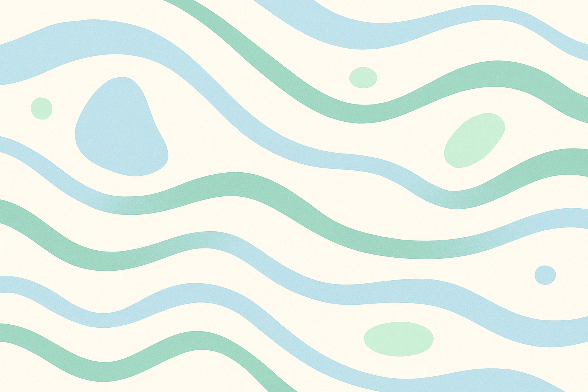
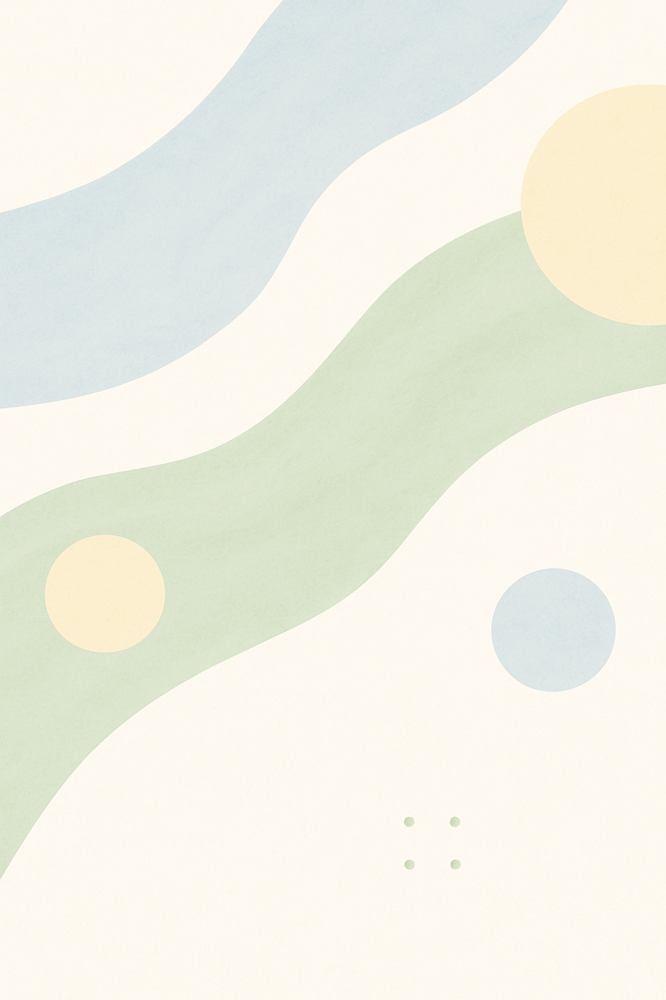
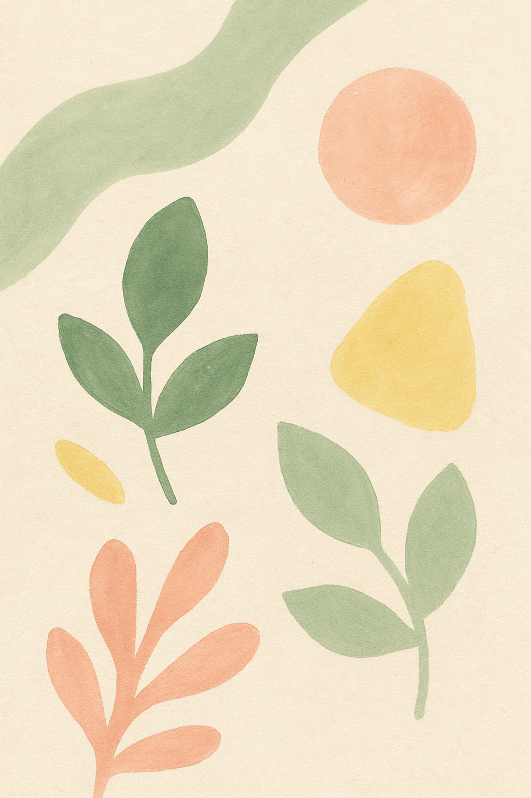

Hello
你好，我是晓伟，欢迎来到我的语雀花园。
- 最喜欢的一句话: cherish or perish
- 日本留学三年，一名不太会什么的SDE，擂鼓过无人机、擂鼓过无人车
- 花园中记录一些自己的想法大概包含: 那些很有趣但是赚不了什么钱的技术，那些深入思但覆盖不了对女生的知识，还有那些知识道着我哭的游戏与电影
- 个人 CV
更新计划
研究方向的梳理与总结
已经完成：
None
第一批次计划：
- ultra‑wide fisheye camera model and calibration
- mage process of ultra‑wide fisheye camera
- 南京大学计算机系统理论基础
- 其余待补充
通识知识的梳理与总结
已经完成：
None
第一批次计划：
- 说服课
- 诗词课程
- 日语中的课程
- 英语文法的课程
生活的梳理与总结
已经完成：
None
第一批次计划：
- 每日体能锻炼
- 读书书单
- 观察单子
- 体态练习
- 力量练习
book

随便鼓捣的想法
1 read

与智者对话的启发
1 read

那些感动我的瞬间
26 read
Update
- 2022‑11‑24 23:20 — 王晓伟的CV — View original
宝可梦旅途中小智夺得世界第一 —